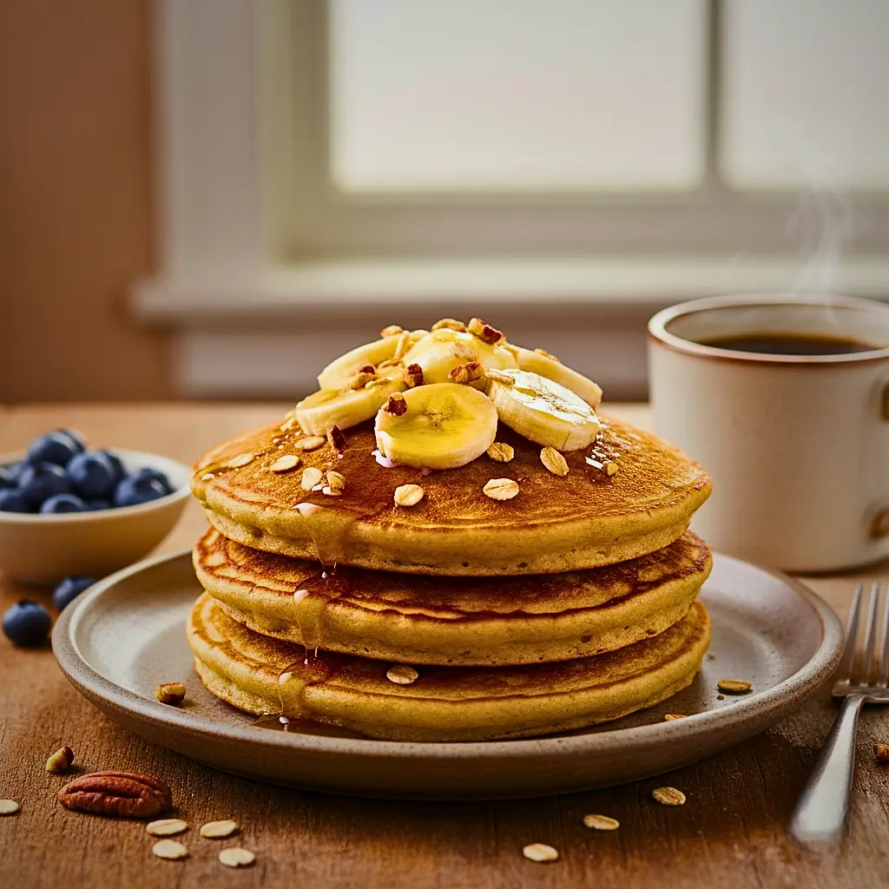
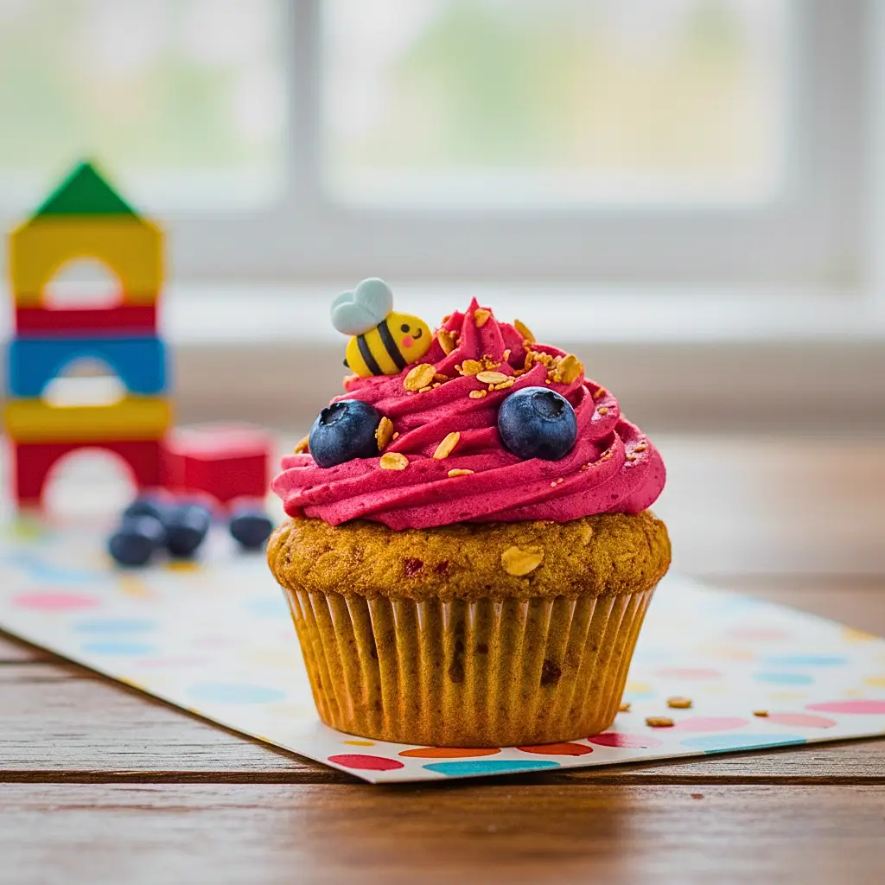
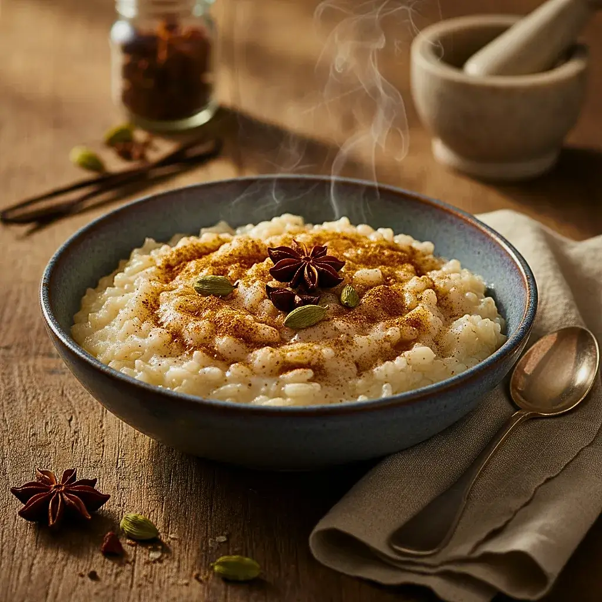
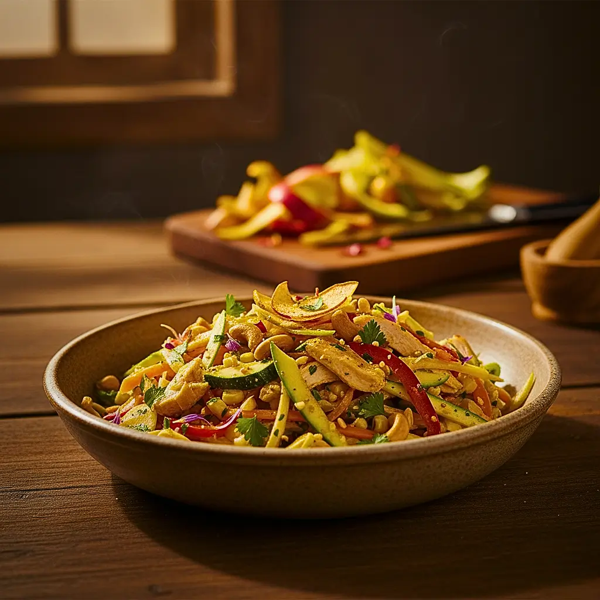
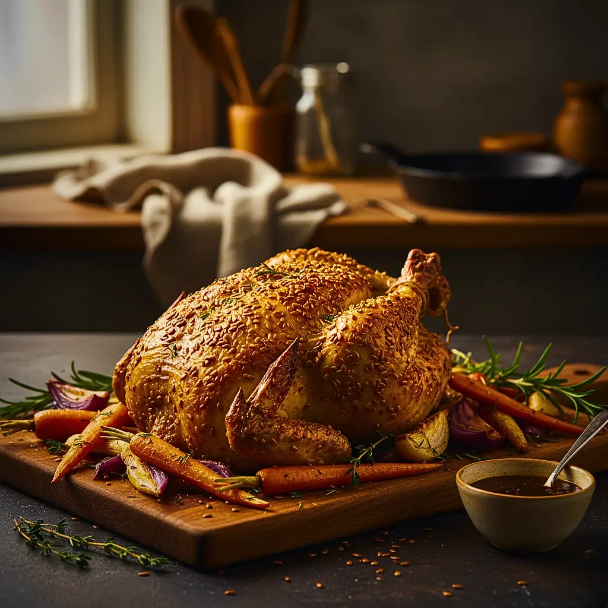
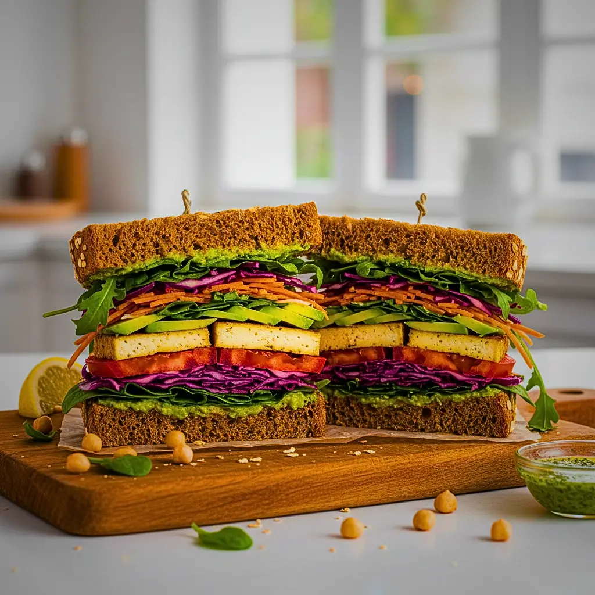
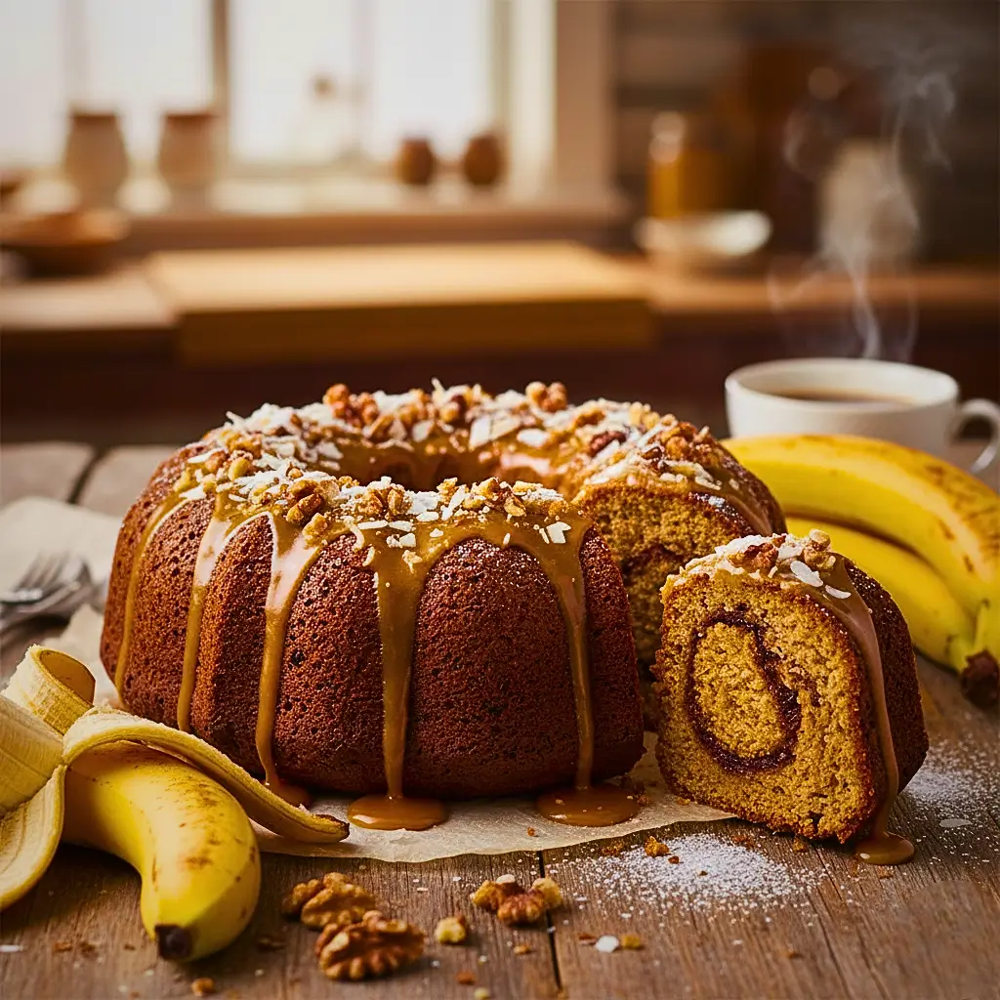
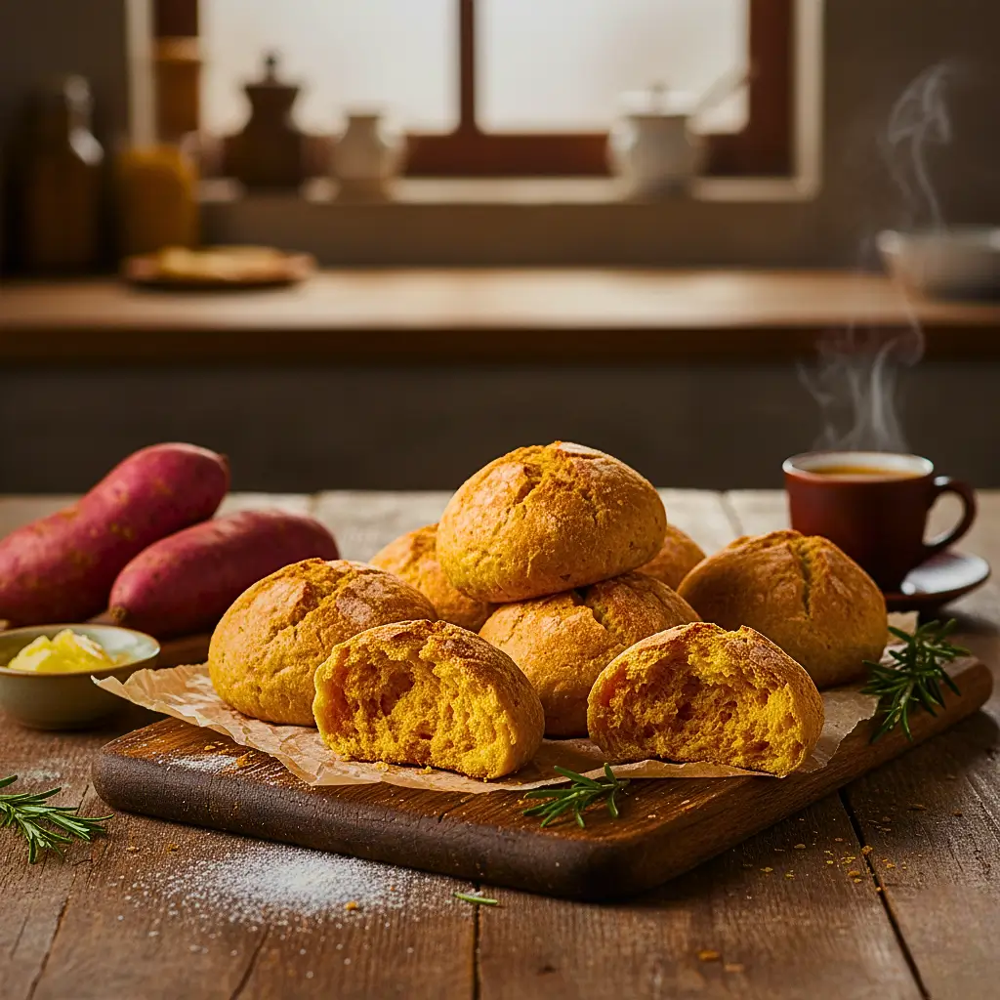

Árvore de Desejos de Natal!
Que tal espalhar luz? Compartilhe um desejo de esperança ou aquele segredo saudável que você adora. Sua mensagem vai virar um lindo Presente pendurado aqui!
Envie seu Desejo Anônimo
NUTRIÇÃO, ANCESTRALIDADE E SAÚDE PARA TODAS AS FASES DA VIDA.
Orientação alimentar baseada em evidências científicas e no Guia Alimentar para a População Brasileira, valorizando nossas origens e a sustentabilidade.
Navegue pelas Fases da VidaExplore Nossos Pilares
Fases da Vida
Conhecimento especializado sobre as demandas nutricionais de cada faixa etária.
Saiba MaisReceitas Acessíveis
Aprenda a preparar pratos saudáveis que respeitam nossas origens e o aproveitamento integral.
Acessar ReceituárioHigiene Alimentar
Aprenda as melhores práticas para higienizar e armazenar seus alimentos de forma segura.
Ver Guias de HigieneNossos Materiais Exclusivos

Conteúdos em Destaque
Lanches Divertidos para Crianças
Ideias criativas e saudáveis para a lancheira escolar que os pequenos vão adorar.
Planejador de Lanches
Vença a correria da semana! Use nossa ferramenta para organizar seus lanches saudáveis.
Espetinhos de Berinjela Veganos
Um clássico em uma versão 100% vegetal, prática e cheia de sabor para a sua marmita.
Quem Somos
A Alimentando Fases nasceu com o propósito de traduzir a ciência da nutrição em conhecimento acessível, humano e prático, respeitando o ritmo de cada pessoa ao longo da vida.
Nosso compromisso é com uma alimentação consciente, sustentável e baseada em evidências científicas, inspirada pelo Guia Alimentar para a População Brasileira e pelas tradições que moldam nossa identidade alimentar.
Acreditamos que comer bem vai além de nutrientes e calorias: é um ato de cuidado, cultura e conexão com as origens. Por isso, unimos informação confiável, educação alimentar e experiências interativas para guiar famílias, profissionais e curiosos em cada etapa do ciclo da vida, da infância à maturidade.
DEDICATÓRIA DA TURMA DE TEC. NUTRIÇÃO
Com o coração cheio de gratidão e propósito, dedicamos este projeto a todos que nos inspiraram e nos guiaram. Que a nutrição continue sendo uma ponte entre a ancestralidade, a ciência e um futuro mais saudável.
— Os FormandosNosso trabalho é feito com paixão por profissionais que acreditam no poder transformador da comida de verdade.
Queremos que cada visita ao site seja um convite para reaprender a se alimentar com prazer, equilíbrio e propósito.
Alimentando Fases — Nutrição, ancestralidade e saúde para todas as fases da vida.
Origem Alimentar: As 3 Matrizes
A alimentação é um ato voluntário e consciente, profundamente enraizado na cultura e na identidade de um povo. No contexto brasileiro, essa relação é formada, principalmente, a partir da herança de três matrizes civilizatrias: indígena, portuguesa e africana.
A Essência Indígena: O Conhecimento da Terra
Nota de Nomenclatura: O termo "índio" é inadequado, pois generaliza os povos. O uso de "povos originários" ou "indígenas" respeita a diversidade dessas comunidades.
A culinária brasileira herdou dos povos indígenas a base de seu conhecimento e o uso de ingredientes nativos. Eles dominavam o conhecimento da terra e das estações, dedicando-se à caça, pesca, coleta de frutos e preparação da roça.
A Rainha Mandioca
O principal legado. Rica fonte de amido e fibras que fornece energia e saciedade através da farinha, beiju e polvilho.
A Paçoca (pa’soka)
O nome vem do Tupi "esmigalhar". Originalmente, era uma mistura prática de farinha de mandioca socada com carne seca.
Frutos e Sementes Nativas
A valorização de ingredientes como açaí, cupuaçu, pequi, buriti e a castanha-do-brasil, que enriquecem nossa diversidade.
A Influência Portuguesa: Transformação e Adaptação
Com a chegada dos colonizadores em 1500, a culinária local foi transformada. A alimentação europeia era marcada pela necessidade de conservar carnes com sal, e as especiarias (pimenta-do-reino, canela) eram itens de luxo usados para mascarar sabores de alimentos nem sempre frescos.
Adaptação de Pratos
A feijoada, que em Portugal usava feijão-branco, foi adaptada no Brasil com o feijão-preto, devido à influência e disponibilidade local.
Novos Ingredientes
Introduziram o arroz (de origem asiática) e trouxeram de suas rotas o azeite de oliva, vinagre, alho, cebola e especiarias.
Hábitos Sociais
A tradição do almoço de domingo em família, o hábito da sobremesa e o conceito de "fartura" à mesa como acolhimento.
A Matriz Africana: Resistência e Riqueza de Sabores
Implementada devido à lucratividade do tráfico negreiro, a mão de obra escravizada africana tinha uma dieta precária, baseada em restos. Apesar da privação, a alimentação permaneceu como um elemento vital de expressão religiosa, cultural e de resistência.
Ingredientes Chave
Introduziram ingredientes que se tornaram pilares da culinária nacional: o leite de coco e o azeite de dendê.
Pratos Emblemáticos
A culinária do Nordeste, em especial, foi moldada por pratos africanos, como o vatapá e o caruru.
Adaptação Cultural
A nossa canjica tem raízes na "kanzika", uma sopa de milho africana que foi adaptada e reinterpretada no Brasil.
Comunidades Quilombolas: Culinária de Resistência
As comunidades quilombolas são grupos étnicos formados a partir de sua relação com a terra e a ancestralidade. Nascidos como espaços de resistência à opressão (como Palmares), sua culinária é um testemunho vivo dessa história de luta e adaptação.
Agricultura Familiar
A base do sustento. A dieta é ligada ao território, composta por cultivos próprios como mandioca, milho, feijão e macaxeira.
Identidade e Território
A culinária não é apenas comida, mas uma forma de preservar costumes ancestrais e proteger o território para as futuras gerações.
Sustentação
A prática do plantio é marcada pelo extremo cuidado e respeito com a terra e os ciclos naturais, buscando a não degradação ambiental.
Jogo: De Qual Matriz Veio?
Você consegue adivinhar a origem principal de cada ingrediente que forma a nossa culinária? Clique em cada item para revelar a resposta!
Azeite de Dendê
MATRIZ AFRICANA! Junto com o leite de coco, é um pilar da culinária afro-brasileira, essencial para pratos como o vatapá.
Mandioca (e seus derivados)
MATRIZ INDÍGENA! É a "rainha" da nossa culinária. A base para farinha, beiju e polvilho, garantindo energia e sustento.
Arroz
MATRIZ PORTUGUESA! Embora de origem asiática, foram os portugueses que o trouxeram em suas rotas comerciais e o popularizaram no Brasil.
Açaí e Pequi
MATRIZ INDÍGENA! São frutos nativos que os povos originários já coletavam e consumiam muito antes da chegada dos colonizadores.
Vatapá e Caruru
MATRIZ AFRICANA! São pratos emblemáticos que nasceram da adaptação de receitas africanas com ingredientes locais e o dendê.
Azeite de Oliva, Alho e Cebola
MATRIZ PORTUGUESA! A base do "refogado" que usamos hoje foi um costume trazido pelos portugueses para temperar os alimentos.
A Jornada dos Sabores: O Mapa das Matrizes
Toda a nossa culinária é uma história de viagens. A Matriz Indígena já estava aqui, a Portuguesa cruzou o Atlântico do leste, e a Africana foi trazida à força do oeste. Clique nos pontos do mapa para ver o resumo de cada legado.
Matriz Indígena
Principais contribuições para a culinária brasileira:
Nutrição na Infância (0-12 anos)
A Aventura da Alimentação Começa
Segundo o Estatuto da Criança e do Adolescente (ECA), é considerada criança até os 12 anos de idade incompletos, após essa idade ela passa a ser considerada adolescente.
A educação alimentar e nutricional (EAN) infantil é um conjunto de ações e estratégias educativas voltadas para promover hábitos alimentares saudáveis desde a infância. O objetivo é que as crianças cresçam conscientes sobre as suas escolhas alimentares, incentivando o consumo equilibrado e variado de alimentos saudáveis.
Os Primeiros 1000 Dias: A Base de Tudo
Os primeiros anos de vida são uma janela crítica para a formação da saúde. O Guia Alimentar foca em duas etapas essenciais:
1. Aleitamento Materno (0-6+ meses)
O leite materno é o alimento de ouro. Recomenda-se o aleitamento materno exclusivo até os 6 meses de vida, pois ele fornece todos os nutrientes e anticorpos necessários. Após os 6 meses, ele deve ser complementado com a introdução de novos alimentos.
2. Introdução Alimentar (A partir dos 6 meses)
A partir dos 6 meses, o bebê está pronto para explorar novos sabores e texturas. A Introdução Alimentar deve ser feita com "comida de verdade": frutas, legumes, verduras, cereais e carnes/ovos, amassados ou em pedaços seguros (método BLW).
Até os 2 anos de idade, evite ao máximo o consumo de açúcar e alimentos ultraprocessados. O paladar do bebê está em plena formação!
Esta fase é sobre construir uma relação positiva e saudável com os alimentos, respeitando os sinais de fome e saciedade do bebê.
A Influência dos Ultraprocessados
Nas últimas décadas, o Brasil reduziu significativamente a taxa de desnutrição crônica entre menores de 5 anos. Ao mesmo tempo, tivemos o aumento progressivamente do consumo de alimentos ultraprocessados (alimentos com baixo valor nutricional e ricos em gorduras, sódio e açúcares) e a prevalência de sobrepeso e obesidade no Brasil.
Uma em cada três crianças de 5 a 9 anos possui excesso de peso.
Apesar da Política Nacional de Alimentação Escolar, a escola ainda é considerada um ambiente obesogênico, com lanches de baixo teor de nutrientes e alto teor de açúcar, gordura e sódio.
Principais Desafios Alimentares
Ultraprocessados
Ricos em: Açúcares, gorduras e sódio.
Exemplos: Salgadinhos, biscoitos recheados,
refrigerantes.
Seletividade
O que é: A criança rejeita determinados alimentos.
Comuns: Principalmente frutas, legumes e verduras.
Doenças
Riscos: Anemia (falta de ferro) e obesidade infantil.
Causa: Excesso de calorias e sedentarismo.
Distrações
Causa: Uso de aparelhos eletrônicos nas refeições.
Efeito: Dificulta a percepção da saciedade e reduz o
interesse pelo alimento.
Os Pilares para Crescer Forte
De acordo com a Organização Mundial de Saúde (OMS) e o Guia Alimentar, uma alimentação equilibrada é composta por 4 grupos essenciais:
Frutas e Vegetais
A base do prato, oferecendo vitaminas e fibras diariamente.
Proteínas e Leguminosas
Essenciais para o crescimento (carnes, ovos) e fontes de ferro (feijão, lentilha).
Grãos Integrais
Fornecem energia duradoura (arroz integral, aveia, pães integrais).
Laticínios e Água
Cálcio para os ossos (leite, iogurtes) e água como principal fonte de hidratação.
Dicas Práticas para Pais e Educadores
- Criar um ambiente positivo durante as refeições, sem aparelhos eletrônicos.
- Envolver as crianças no preparo dos alimentos, tornando o momento educativo e divertido.
- Oferecer diferentes alimentos saudáveis de forma repetida, sem forçar o consumo.
- Dar o exemplo: Crianças tendem a imitar os hábitos alimentares dos adultos.
- Explicar de maneira simples e lúdica a importância de uma boa alimentação para crescer forte, brincar e aprender melhor.
Mito ou Verdade?
Teste seu conhecimento sobre os mitos mais comuns da alimentação infantil!
Mito ou Verdade: "Suco de caixinha é tão saudável quanto a fruta."
MITO! A maioria dos sucos de caixinha é ultraprocessada, cheia de açúcar e conservantes, e perde a maior parte das fibras da fruta. Sempre prefira a fruta in natura!
Mito ou Verdade: "Criança que não come é falta de educação."
MITO! Muitas vezes, a recusa (seletividade) é uma fase normal do desenvolvimento. Forçar a criança a "limpar o prato" pode piorar a relação dela com a comida. O ideal é ter paciência e continuar oferecendo.
Mito ou Verdade: "Dar o exemplo e brincar com a comida ajuda a criança a comer melhor."
VERDADE! Crianças aprendem por imitação. Ver os pais comendo de forma saudável é o maior incentivo. Além disso, envolver a criança no preparo e criar um ambiente positivo, sem distrações, transforma a refeição em um momento divertido e de aprendizado.
Mito ou Verdade: "Meu filho não gosta de vegetais, então não adianta mais oferecer."
MITO! O paladar da criança está em formação. Estudos mostram que pode ser necessário oferecer o mesmo alimento de 10 a 15 vezes, em preparos diferentes, até que ela aceite. Não desista!
Mito ou Verdade: "O aleitamento materno é a base de tudo nos primeiros meses."
VERDADE! O aleitamento materno exclusivo até os 6 meses (e complementado depois) é crucial para o crescimento saudável. O leite materno é o alimento mais completo, fornecendo todos os nutrientes e anticorpos que o bebê precisa para se desenvolver e prevenir doenças.
Mito ou Verdade: "Crianças precisam 'raspar o prato' para crescerem fortes."
MITO! Crianças têm um mecanismo de saciedade muito apurado. Forçá-las a comer mais do que precisam ignora esse sinal e pode contribuir para a obesidade. Respeite a fome e a saciedade da criança.
Vamos Praticar!
Agora que você sabe os desafios e os mitos, que tal praticar? Arraste os alimentos para as caixas corretas e ensine os pequenos a diferenciar "comida de verdade" de ultraprocessados!
Pressione e arraste os alimentos para as caixas.
In Natura / Minimamente Processados
Processados
Ultraprocessados
Receitas Divertidas para Fazer (e Sujar) Juntos
-
Muffin Colorido de Casca de Banana e Cenoura
Ingredientes:
- 2 bananas maduras (com as cascas bem lavadas)
- 1 cenoura média ralada
- 2 ovos
- 1/2 xícara de óleo vegetal ou de coco
- 1 xícara de açúcar mascavo ou demerara
- 1 e 1/2 xícara de farinha de trigo (pode usar metade integral)
- 1 colher (sopa) de fermento em pó
- Canela em pó a gosto (opcional)
Modo de preparo:
- Lave bem as cascas de banana e corte-as em pedaços.
- No liquidificador, bata as cascas, bananas, ovos, óleo e açúcar até formar uma mistura homogênea.
- Transfira para uma tigela e adicione a cenoura ralada e a farinha, mexendo bem.
- Por último, coloque o fermento e misture delicadamente.
- Distribua a massa em formas de muffin ou cupcake, de preferência coloridas e pequenas.
- Asse em forno médio (180 °C) por cerca de 25 a 30 minutos, até dourar.
-

Panquequinha de banana e aveia
Ingredientes:
- 1 banana madura
- 1 ovo
- 2 colheres (sopa) de aveia sem glúten (ou farinha de arroz)
- Canela a gosto
Modo de preparo:
- Higienize as mãos e utensílios.
- Amasse a banana até formar um purê.
- Misture o ovo, a aveia e a canela até obter uma massa cremosa.
- Aqueça uma frigideira antiaderente e coloque pequenas porções da massa.
- Cozinhe em fogo baixo, dourando dos dois lados.
- Sirva morna, acompanhada de frutas ou iogurte natural.
-

Bolinho Vegano de Banana e Aveia
Ingredientes
- 2 bananas maduras
- 1 xícara de aveia em flocos finos (sem glúten, se necessário)
- 1 colher (sopa) de óleo de coco ou outro óleo vegetal
- 1 colher (chá) de canela
- 1 colher (chá) de fermento em pó
- Opcional: 2 colheres (sopa) de cacau em pó ou frutas secas picadas
Modo de preparo:
- Pré-preparo: Preaqueça o forno a 180 °C. Unte levemente uma forma ou use forminhas de silicone.
- Preparar a massa: Amasse bem as bananas até formar um purê. Misture a aveia, o óleo de coco, a canela e o fermento. Adicione cacau ou frutas secas, se desejar. Misture até obter uma massa homogênea e levemente pegajosa.
- Formar e assar: Modele pequenas bolinhas ou coloque porções com colher na forma. Asse por 15–20 minutos ou até que estejam firmes e douradas.
- Finalização: Deixe esfriar antes de servir. Pode acompanhar com frutas frescas ou iogurte vegetal.
Nutrição na Adolescência (12-19 anos)
A adolescência é uma fase biológica e social de transição do indivíduo, que marca a passagem da infância para a idade adulta. Nesta fase de tantas transformações, a alimentação e a formação de hábitos saudáveis são cruciais para o desenvolvimento e o bem-estar futuro.
Alimentação Saudável com Base no Guia
O Guia Alimentar para a População Brasileira apresenta um conjunto de informações e recomendações para promover a saúde das pessoas, famílias e comunidades.
Princípios do Guia na Adolescência:
- Alimentação é mais que nutrientes: Envolve os alimentos, o modo como são preparados, o modo de comer e as dimensões culturais e sociais.
- Autonomia nas escolhas: O guia amplia a autonomia, o que é importante para que o adolescente exerça seu direito humano à alimentação adequada e saudável.
O problema dos ultraprocessados
Estes alimentos, que incluem refrigerante e salgadinho de pacote, substituem a "comida de verdade" e comprovadamente causam excesso de peso, obesidade, hipertensão, doenças do coração e até depressão.
Influência e Fatores Externos
Para quem tem adolescentes em fase de criar hábitos, os adultos são os primeiros exemplos. Além disso, adotar uma alimentação saudável não é apenas uma escolha individual, mas é influenciada por fatores como a presença de feiras e mercados de boa qualidade no território.
A Fase do Estirão Puberal
O Estirão do Crescimento (ou Estirão Puberal) é um período de crescimento acelerado em que ocorre um grande aumento da velocidade de crescimento em altura, coincidindo com a puberdade. Essa fase é de extrema importância nutricional.
Características do Estirão:
- O que é: É uma explosão de crescimento rápido dos ossos e músculos, com a velocidade de crescimento podendo quase dobrar (alcançando, em média, até 11 cm por ano).
- Duração: Dura, em média, de três a quatro anos.
- Idade Média (Meninas): O pico de velocidade de crescimento (PVC) ocorre entre 11 e 12 anos. A menstruação (menarca) ocorre após o pico, na fase de desaceleração.
- Idade Média (Meninos): O estirão é um pouco mais tardio e mais intenso, com pico entre 13 e 14 anos (crescimento médio de 10 cm por ano).
- Sintomas comuns: A rápida aceleração pode levar às "dores do crescimento", que afetam principalmente as pernas, joelhos e coluna.
- Impacto na Nutrição: As necessidades nutricionais aumentam drasticamente. Os adolescentes sentem uma onda de fome constante, pois o corpo precisa de mais calorias e nutrientes para sustentar o desenvolvimento.
Os adolescentes sentem uma onda de fome constante, pois o corpo precisa de mais calorias e nutrientes para sustentar o desenvolvimento.
Vitaminas e Minerais Essenciais
Durante o estirão puberal, a demanda por nutrientes específicos aumenta. Garanta o consumo adequado dos seguintes elementos para um desenvolvimento ósseo e muscular completo:
Cálcio (Ca)
Função: Fortalece seus OSSOS! Crucial para atingir o
pico de massa óssea.
Fontes: Leite e derivados, brócolis, gergelim.
Ferro (Fe)
Função: Garante energia pura! Essencial para o
transporte de oxigênio e combate à fadiga.
Fontes: Carnes vermelhas, feijão, lentilha.
Zinco (Zn)
Função: Turbina a IMUNIDADE! Ajuda na maturação sexual
e cicatrização (acne).
Fontes: Ostras, carnes, sementes de abóbora.
Vitamina C
Função: SUPER-PROTEÇÃO! Essencial para o sistema
imunológico e absorção de ferro.
Fontes: Acerola, laranja, morango, pimentão.
Vitamina A
Função: VISÃO & PELE SAUDÁVEIS! Combate à acne hormonal
e mantém a saúde ocular.
Fontes: Cenoura, mamão, gema de ovo.
Proteínas
Função: CONSTRÓI MÚSCULOS! Vital para o ganho de massa
magra e reparo dos tecidos no estirão.
Fontes: Carnes magras, ovo, leite, feijão.
ATENÇÃO: Consumo de Bebidas Energéticas e Álcool
O consumo de Álcool e Bebidas Energéticas na adolescência é altamente desaconselhado e traz riscos amplificados devido ao intense desenvolvimento cerebral.
Danos ao Desenvolvimento Cerebral
O cérebro adolescente está em fase crítica de amadurecimento, especialmente no córtex pré-frontal (julgamento, controle de impulsos). O álcool atua como neurotoxina, prejudicando o amadurecimento dessas funções. A alta dose de cafeína dos energéticos afeta a química cerebral, potencializando a ansiedade e a insônia.
O Perigo da Mistura (Álcool + Energético)
A combinação é perigosa pois o estimulante do energético "mascara" o efeito depressor do álcool, fazendo com que o adolescente beba muito mais, aumentando o risco de intoxicação grave e sobrecarga cardíaca.
Consequências Comportamentais
O uso dessas substâncias facilita a exposição a situações de risco devido ao prejuízo no julgamento, incluindo:
- Acidentes e Lesões.
- Comportamento Sexual de Risco.
- Maior propensão ao uso de outras drogas.
Receitas de Aproveitamento Integral
-

Arroz doce com especiarias
Ingredientes:
- 1 xícara de arroz cru (ou 2 de arroz cozido)
- 3 xícaras de água (se usar arroz cru)
- 1 litro de leite de vaca
- 4 colheres (sopa) de açúcar
- 2 paus de canela, 4 cravos
- ½ colher (chá) de gengibre em pó
- ½ colher (chá) de noz moscada
- Raspas de 1 limão
- 1 colher (chá) de açafrão (cúrcuma)
Preparo:
- Cozinhe o arroz com água. Adicione o leite, açúcar e especiarias (menos o limão).
- Cozinhe em fogo baixo, mexendo até ficar cremoso.
- Adicione as raspas de limão ao final. Sirva quente ou frio.
Nutrientes: Vitaminas do Complexo B (B1, B2, B6, B12), Vitamina C, Potássio, Fósforo, Cálcio e Magnésio.
Informação Nutricional (porção)
- Calorias: 288 kcal
- Carboidratos: 49.2 g
- Proteínas: 11.2 g
- Gorduras Totais: 6.7 g
- Fibras: 1.2 g
-
Suco de Casca de Frutas
Ingredientes:
- 3 xícaras (chá) de cascas de frutas variadas (abacaxi, maçã, manga, etc.)
- 2 litros de água
- Açúcar a gosto
Preparo:
- Lave bem as cascas.
- Bata no liquidificador com a água.
- Coe bem e adoce a gosto.
Nutrientes: Vitaminas C e B1, Potássio, Fósforo, Cálcio e Magnésio.
Informação Nutricional (copo 200ml)
- Calorias: 45 - 65 kcal
- Carboidratos: 11 - 16 g
- Proteínas: 0.1 - 0.3 g
- Gorduras Totais: 0 g
- Fibras: 0.3 - 0.5 g
-

Salpicão com Aproveitamento de Cascas
Ingredientes:
- 1 xícara de casca de abóbora (tiras)
- 1 xícara de casca de chuchu (tiras)
- 1 xícara de casca de manga (tiras)
- 1 xícara de casca de melão (tiras)
- ½ xícara de couve picada
- 1 xícara de salsão com folhas picado
- Azeite, limão, sal, ervas e pimenta
Preparo:
- Lave bem tudo. Cozinhe as cascas no vapor "al dente" (macias, mas não moles).
- Deixe esfriar e misture com a couve e o salsão.
- Tempere com azeite, sal, ervas e limão. Sirva frio.
Nutrientes: Vitaminas C, K, A, E, B9 e B1. Potássio, Fósforo, Cálcio, Magnésio, Ferro e Manganês.
Informação Nutricional (porção)
- Calorias: 100 kcal
- Carboidratos: 9.1 g
- Proteínas: 1.3 g
- Gorduras Totais: 6.9 g
- Fibras: 3.9 g
Teste seu Conhecimento!
Encontre as palavras-chave da nutrição na adolescência em nosso caça-palavras!
Palavras:
Nutrição na Fase Adulta (20-59 anos)
Esta é a fase de consolidação. A "correria" do dia-a-dia, entre trabalho, família e estudos, exige uma alimentação que forneça energia constante e, o mais importante, atue como um escudo protetor para a saúde futura.
Os Desafios Reais da Rotina de Trabalho
Um dos grandes desafios enfrentados por muitos trabalhadores é a alimentação inadequada no dia a dia. Isso normally está atrelado a fatores como estresse, ansiedade, fadiga, a correria do cotidiano e a tendência de comer fora dos horários certos. Essas questões podem levar a sérios problemas de saúde, como diabetes, hipertensão e obesidade.
Uma pesquisa divulgada pela CNN Brasil (com dados do onlinescurriculo) mostrou que 54% dos entrevistados apontam a tentação por lanches e alimentos rápidos como o principal obstáculo. Além disso, 29,4% relataram que fazem escolhas alimentares menos equilibradas devido ao estresse e à ansiedade.
Quais comportamentos te distanciam de hábitos saudáveis no trabalho?
- Tentação por lanches e alimentos rápidos
- Escolhas alimentares impulsivas por estresse ou ansiedade
- Desorganização pessoal
- Preguiça ou falta de motivação para fazer escolhas saudáveis
- Influência de colegas ou ambiente de trabalho
- Consumo excessivo de café ou bebidas energéticas
- Mecanismo de recompensa
- Não tenho interesse em me alimentar de forma saudável
Pergunta com possibilidade de múltipla escolha. Fonte: onlinescurriculo
Esses dados reforçam como o ritmo acelerado e o estresse do cotidiano profissional podem impactar diretamente nas escolhas alimentares, tornando mais difícil manter hábitos saudáveis durante a rotina de trabalho.
O Pilar da Prevenção: DCNT
A fase adulta é o período em que nossos hábitos começam a cobrar a conta. O foco principal da nutrição aqui é a prevenção das Doenças Crônicas Não Transmissíveis (DCNT), como:
- Diabetes Tipo 2
- Hipertensão Arterial (Pressão Alta)
- Dislipidemia (Colesterol e Triglicerídeos altos)
- Obesidade
A maioria dessas condições está diretamente ligada ao consumo excessivo de açúcares, gorduras saturadas, sódio e, principalmente, alimentos ultraprocessados. A regra de ouro do Guia Alimentar é mais importante do que nunca:
"Descasque mais, desempacote menos."
Uma dieta baseada em alimentos in natura e minimamente processados é o melhor seguro de saúde que você pode ter.
Nutrientes-Chave para Manutenção
Para combater os desafios da rotina, seu corpo precisa das ferramentas certas. Foco em:
1. Fibras (O Motor do Intestino)
Essenciais para a saciedade (ajudando no controle de peso), controle da glicemia (prevenção de diabetes) e saúde intestinal. Fontes: Aveia, feijão, lentilha, frutas com casca, legumes e verduras.
2. Antioxidantes (O Escudo)
Combatem os radicais livres gerados pelo estresse e poluição, prevenindo o envelhecimento precoce. Fontes: Frutas vermelhas (morango, amora), açaí, vegetais verde-escuros (couve, espinafre), castanhas (Vitamina E).
3. Proteínas Magras (A Estrutura)
Fundamentais para a manutenção da massa muscular, que começa a declinar naturalmente após os 30 anos. Fontes: Ovos, frango, peixes, iogurte natural, e leguminosas (grão-de-bico, feijão, tofu).
4. Gorduras Boas (O Lubrificante)
Importantes para a saúde do cérebro e do coração, além de ajudarem na absorção de vitaminas. Fontes: Abacate, azeite de oliva extra-virgem, salmão, linhaça, chia e oleaginosas (nozes, amêndoas).
Proteínas e a Prevenção da Perda Muscular (Sarcopenia)
A partir dos 30 anos, o corpo começa a perder massa muscular progressivamente (Sarcopenia), que é a causa principal da fraqueza e dificuldade de locomoção na velhice. A prevenção é essencial na fase adulta.
Estratégias Chave:
- Distribuição Diária: O consumo de proteína deve ser distribuído ao longo do dia (café da manhã, almoço e jantar), e não concentrado apenas no almoço.
- Qualidade da Proteína: Priorize proteínas de alta qualidade e com bom perfil de aminoácidos, como ovos, frango, peixes e leguminosas (feijão, grão-de-bico).
- O Papel da Atividade Física: A proteína sozinha não funciona! A combinação de exercícios de resistência (musculação) e ingestão proteica é o único meio eficaz de manter a massa magra.
Manter a massa muscular agora é o melhor investimento para sua independência na terceira idade.
Dicas Práticas: O Poder do Planejamento
A chave para vencer a "falta de tempo" é o planejamento. Ninguém come mal porque quer, mas porque é mais fácil.
Organize suas Marmitas
Tire 2h do fim de semana para cozinhar bases (arroz, feijão, legumes) e deixar carnes já temperadas.
Lanches Inteligentes
Tenha na bolsa "kits" de emergência saudáveis: um mix de castanhas, uma fruta ou um iogurte natural.
Hidratação é Meta
Tenha uma garrafa visível na mesa. Muitas vezes, o corpo confunde sede com fome ou ansiedade.
Leia os Rótulos
Fuja das armadilhas dos ultraprocessados. Use nossa seção de rotulagem para aprender a "desempacotar menos".
Ferramenta: Planejador de Lanches da Semana
A "Desorganização" (25,8%) e a "Tentação por lanches" (54%) são seus maiores desafios? Use esta ferramenta para planejar seus "Lanches Inteligentes" e vencer a correria!
Segunda-feira
Terça-feira
Quarta-feira
Quinta-feira
Sexta-feira
Sábado
Domingo
Receitas Inteligentes para a Rotina
-
Espetinhos de Berinjela Marinada
Ingredientes:
- 1 berinjela grande, cortada em cubos grandes
- 1 pimentão vermelho, cortado em cubos
- 1 cebola roxa, cortada em pedaços
- Azeite de oliva, sal, pimenta e orégano a gosto
Modo de preparo:
- Marine os cubos de berinjela e vegetais no azeite, sal, pimenta e orégano por 15 minutos.
- Intercale a berinjela, o pimentão e a cebola nos palitos de espetinho.
- Grelhe em frigideira quente ou asse no forno (200 °C) por 15-20 minutos, virando na metade do tempo.
- Sirva quente ou frio para levar como marmita.
Informação Nutricional (por espetinho)
- Calorias: 150 kcal
- Carboidratos: 12 g
- Proteínas: 3 g
- Gorduras Totais: 10 g
-

Frango Crocante com Linhaça (Assado)
Ingredientes:
- 4 filés de peito de frango (cerca de 150g cada)
- 1/2 xícara de linhaça triturada
- 2 claras de ovo
- Sal, páprica defumada e alho em pó a gosto
Modo de preparo:
- Tempere os filés de frango com sal e os outros temperos.
- Passe cada filé nas claras batidas.
- Em seguida, empane na linhaça triturada, garantindo que cubra toda a superfície.
- Disponha em uma assadeira untada ou forrada com papel-manteiga.
- Asse em forno pré-aquecido (200 °C) por cerca de 30-35 minutos, ou até que o frango esteja cozido e crocante.
Informação Nutricional (por porção)
- Calorias: 280 kcal
- Carboidratos: 5 g
- Proteínas: 38 g
- Gorduras Totais: 12 g
-

Sanduíche Natural Vegano no Pão Integral
Ingredientes:
- 2 fatias de pão integral
- 2 colheres (sopa) de homus (pasta de grão-de-bico)
- Folhas de rúcula ou alface
- Fatias finas de pepino e tomate
- Opcional: Sementes de gergelim para decorar
Modo de preparo:
- Passe o homus em ambas as fatias de pão integral.
- Em uma das fatias, distribua as folhas de rúcula/alface e as fatias de pepino e tomate.
- Feche o sanduíche e, se desejar, corte-o ao meio para facilitar o consumo.
- Embale em papel manteiga para levar ao trabalho.
Informação Nutricional (por sanduíche)
- Calorias: 320 kcal
- Carboidratos: 40 g
- Proteínas: 15 g
- Gorduras Totais: 12 g
Conteúdo em Vídeo: Nutrição e Rotina
Assista a vídeos e tutoriais rápidos sobre como simplificar a alimentação saudável no seu dia a dia.
5 Dicas de Marmitas Práticas e Saudáveis

Estratégias de planejamento para economizar tempo e vencer a tentação dos lanches rápidos no trabalho.
Alimentação Anti-Estresse e Memória

Conheça os nutrientes e alimentos que ajudam a combater o cortisol, melhorar a memória e a ansiedade.
A Real Importância da Proteína

Guia rápido para garantir o aporte proteico adequado e prevenir a perda muscular (sarcopenia precoce).
Nutrição na Terceira Idade (60+ anos)
Saúde e Qualidade de Vida na Terceira Idade
A adoção de hábitos alimentares saudáveis representa um fator determinante para a qualidade de vida da população em geral, especialmente entre indivíduos com 60 anos ou mais. Uma alimentação equilibrada contribui para a prevenção de doenças, o controle de condições crônicas e o fornecimento adequado de nutrientes, evitando deficiências e complicações associadas ao envelhecimento.
Entendendo os Nutrientes Essenciais
Os macros e micronutrientes ambos são essenciais para a saúde, sendo os macronutrientes nutrientes que necessitamos em uma quantidade maior para o bom funcionamento do nosso corpo no qual ele é composto pelos carboidratos, proteínas e lipídios. Os micronutrientes são necessários em quantidade menor, sendo eles as vitaminas e os minerais.
Macronutrientes: A Base da Energia
Carboidratos: Nossa principal fonte de energia. Os principais alimentos que nos fornecem essa energia são as frutas, legumes, grãos, cereais e raízes, que contribuem para o bom funcionamento do organismo e garantem disposição ao longo do dia.
Proteínas: Possuem diversas funções no organismo, como formar músculos, produzir anticorpos, manter a saúde da pele, cabelo e unhas e equilibrar hormônios. Temos como exemplo os alimentos de origem animal (carne bovina, frango, peixes, ovo, leite e derivados) e de origem vegetal (soja, grão de bico, feijão, etc).
Lipídios (Gorduras): A sua função é como reserva de energia e produzir hormônios. Existem gorduras boas como as insaturadas (óleos vegetais, abacate, peixes). As saturadas vêm de fontes animais (consumo moderado) e as gorduras trans são industriais (devem ser evitadas).
Micronutrientes: Vitaminas e Minerais Chave
Vitamina D: Fundamental para a absorção de cálcio, ajudando a preservar a densidade óssea e prevenindo fraturas. Encontrada no salmão, ostras, carnes, queijo, leite e ovos, e através da exposição ao sol.
Vitamina B12: Ajuda a manter a clareza mental e as funções neurológicas. Presente em alimentos de origem animal, como peixes, fígado bovino, ovos e laticínios.
Vitamina C: Ajuda a equilibrar o sistema imunológico, manter a saúde da pele e promover a absorção de ferro. Encontrada em frutas e legumes como caju, brócolis, acerola, goiaba e laranja.
Cálcio: O mineral mais abundante no corpo, encontrado nos ossos e dentes. Participa da contração muscular e sistema imunológico. Fontes: leite e derivados, sardinha, espinafre e feijão.
Ferro: Participa da formação de hemoglobina (transporte de oxigênio), previne a anemia e ajuda no bom funcionamento do coração. Fontes: carne bovina, frango, vísceras, gema de ovo, sementes de abóbora e tofu.
Zinco: Possui ação antioxidante e anti-inflamatória, fortalecendo o sistema imunológico e ajudando na cicatrização. Fontes: frutos do mar, carnes, ovos, leguminosas e oleaginosas.
Dificuldades Comuns na Alimentação do Idoso
Os idosos enfrentam várias dificuldades na fase da alimentação. Em vez de uma lista, veja visualmente os principais desafios e seus riscos associados:
Sarcopenia
É a perda de força e massa muscular, comum com a idade, mas também ligada à falta de exercício e alimentação desequilibrada, causando quedas e fraturas.
Desnutrição
A falta de nutriente e perda de massa magra torna o idoso mais dependente e suscetível a outras doenças.
Obesidade
É o acúmulo de gordura no corpo e vem atrelado a várias outras doenças como a diabetes e hipertensão.
Disfagia
É a dificuldade de engolir, que pode levar à desnutrição, desidratação e pneumonia por aspiração. Pode ser causada pelo envelhecimento natural ou por doenças.
A Importância da Ingestão de Água
A ingestão regular de água é fundamental para a saúde e qualidade de vida dos idosos, pois a percepção de sede diminui com a idade. A desidratação pode levar a sérias consequências:
Riscos da Desidratação
- Problemas de função cognitiva (confusão)
- Aumento do risco de quedas
- Problemas renais e infecções
- Constipação intestinal
Benefícios da Água
- Mantém a temperatura corporal
- Facilita a digestão e absorção
- Melhora a função cognitiva
- Essencial para a saúde renal
Como garantir a hidratação?
Para garantir uma hidratação adequada, é importante monitorar a ingestão de líquidos e usar lembretes. Incentive o consumo de líquidos variados, como:
- Água saborizada (com rodelas de limão ou hortelã)
- Sucos naturais (sem adição de açúcar)
- Sopas e caldos
- Chás claros (camomila, erva-doce)
Calculadora de Hidratação
Use nossa calculadora para estimar sua necessidade diária de água com base no seu peso e faixa etária, conforme recomendações gerais.
Calcule sua Meta Pessoal
Sua meta diária recomendada é:
0,00 Litros
O que equivale a aproximadamente:
(Insira seus dados para calcular.)
Alimentos Ultraprocessados e Seus Riscos
O consumo excessivo de alimentos ultraprocessados (AUP) pode levar a uma série de problemas de saúde, especialmente na população idosa.
O que são? São produtos industriais feitos com substâncias artificiais ou extraídas de alimentos, como emulsificante, corante, aromatizante, açúcar e gordura hidrogenada. São saborosos, práticos e de baixo custo.
Os resultados mais comuns do consumo excessivo incluem diabetes tipo 2, hipertensão e problemas cardiovasculares. Estudos indicam que o alto consumo de AUP está associado a maiores níveis de escolaridade, viver em centros urbanos e passar muitas horas em frente à televisão.
Aproveitamento Integral dos Alimentos
O aproveitamento integral dos alimentos, que inclui cascas, talos, sementes e folhas, é especialmente benéfico para os idosos, pois concentra a maior parte dos nutrientes essenciais. Na terceira idade, a absorção de vitaminas e minerais pode ser menos eficiente.
Os benefícios incluem a redução do desperdício, a diminuição de custos, o aumento do valor nutricional e a criação de novas receitas. Ao usar partes que são ricas em fibras, vitaminas e minerais, a alimentação se torna mais nutritiva, ajudando na saúde digestiva e no controle de doenças crônicas.
Receitas Focadas na Terceira Idade
-

Bolo de Casca de Banana
Ingredientes:
- 6 cascas de banana
- 6 bananas cortadas em cubos
- 3 ovos
- 1 xícara de óleo
- 2 xícaras de farinha de aveia
- 2 xícaras de açúcar
- 1 colher (sopa) de fermento químico
- 1 pitada de sal
Modo de preparo:
- No liquidificador, bata as cascas da banana, os ovos, o óleo, o açúcar e o sal por 5 minutos.
- Em uma tigela, adicione o líquido batido. Coloque a farinha de aveia peneirada aos poucos, até formar uma massa lisa.
- Adicione as bananas em cubos e mexa.
- Por último, coloque o fermento e misture.
- Despeje em uma assadeira untada e leve ao forno a 180°C por 30-40 minutos.
-

Pão de Batata Doce
Ingredientes:
- 800g de batata cozida
- 1kg de farinha de aveia
- 20g de fermento biológico
- 1 colher (chá) de sal
- 50g de açúcar
- 500ml de água morna
Modo de preparo:
- Em 100ml de água morna, adicione o açúcar e o fermento, deixe descansar.
- Em uma tigela, adicione as batatas cozidas e amassadas.
- Coloque a mistura do fermento, a aveia aos poucos e o restante da água.
- Adicione o sal e sove a massa. Deixe descansar por 10 min.
- Molde a massa em bolinhas e coloque na forma untada.
- Asse no forno pré-aquecido a 180°C por 20 min.
-
Chips de Legumes / Cascas
Ingredientes:
- 100g de batata doce
- 100g de batata inglesa
- 100g de abobrinha
- 100g de banana da terra
- 100g de beterraba
- Sal, temperos a gosto e azeite
Modo de preparo:
- Corte os legumes em fatias bem finas. Mergulhe em água com gelo por 15 minutos.
- Micro-ondas: Forre com papel-manteiga e asse por 8 minutos de cada lado, um tipo de legume por vez.
- Forno: Distribua em forma antiaderente e asse por 10 minutos em forno baixo pré-aquecido.
- Tempere com sal, azeite e temperos naturais.
Nosso Livro de Receitas
Todas as receitas do site, separadas por categorias para facilitar sua busca. Encontre pratos veganos, sem glúten e de aproveitamento integral.
-
Muffin Colorido de Casca de Banana e Cenoura
Ingredientes:
- 2 bananas maduras (com as cascas bem lavadas)
- 1 cenoura média ralada
- 2 ovos
- 1/2 xícara de óleo vegetal ou de coco
- 1 xícara de açúcar mascavo ou demerara
- 1 e 1/2 xícara de farinha de trigo
-
Panquequinha de banana e aveia
Ingredientes:
- 1 banana madura
- 1 ovo
- 2 colheres (sopa) de aveia sem glúten (ou farinha de arroz)
- Canela a gosto
-
Bolinho Vegano de Banana e Aveia
Ingredientes
- 2 bananas maduras
- 1 xícara de aveia em flocos finos (sem glúten, se necessário)
- 1 colher (sopa) de óleo de coco ou outro óleo vegetal
- 1 colher (chá) de canela
- 1 colher (chá) de fermento em pó
-
Arroz doce com especiarias
Ingredientes:
- 1 xícara de arroz cru (ou 2 de arroz cozido)
- 3 xícaras de água (se usar arroz cru)
- 1 litro de leite de vaca
- 4 colheres (sopa) de açúcar
- 2 paus de canela, 4 cravos
-
Suco de Casca de Frutas
Ingredientes:
- 3 xícaras (chá) de cascas de frutas variadas (abacaxi, maçã, manga, etc.)
- 2 litros de água
- Açúcar a gosto
-
Salpicão com Aproveitamento de Cascas
Ingredientes:
- 1 xícara de casca de abóbora (tiras)
- 1 xícara de casca de chuchu (tiras)
- 1 xícara de casca de manga (tiras)
- 1 xícara de casca de melão (tiras)
- ½ xícara de couve picada
-
Espetinhos de Berinjela Marinada
Ingredientes:
- 1 berinjela grande, cortada em cubos grandes
- 1 pimentão vermelho, cortado em cubos
- 1 cebola roxa, cortada em pedaços
- Azeite de oliva, sal, pimenta e orégano a gosto
-
Frango Crocante com Linhaça (Assado)
Ingredientes:
- 4 filés de peito de frango (cerca de 150g cada)
- 1/2 xícara de linhaça triturada
- 2 claras de ovo
- Sal, páprica defumada e alho em pó a gosto
-
Sanduíche Natural Vegano no Pão Integral
Ingredientes:
- 2 fatias de pão integral
- 2 colheres (sopa) de homus (pasta de grão-de-bico)
- Folhas de rúcula ou alface
- Fatias finas de pepino e tomate
-
Bolo de Casca de Banana
Ingredientes:
- 6 cascas de banana
- 6 bananas cortadas em cubos
- 3 ovos
- 1 xícara de óleo
- 2 xícaras de farinha de aveia
- 2 xícaras de açúcar
-
Pão de Batata Doce
Ingredientes:
- 800g de batata cozida
- 1kg de farinha de aveia
- 20g de fermento biológico
- 1 colher (chá) de sal
- 50g de açúcar
- 500ml de água morna
-
Chips de Legumes / Cascas
Ingredientes:
- 100g de batata doce
- 100g de batata inglesa
- 100g de abobrinha
- 100g de banana da terra
- 100g de beterraba
-

Farofa Festiva de Talos e Castanhas
Ingredientes:
- 2 xícaras de farinha de mandioca torrada
- 1 xícara de talos picados (agrião, beterraba, brócolis)
- ½ xícara de castanha-do-pará ou nozes picadas
- 1 cebola roxa picada
- ½ xícara de uvas passas (opcional)
- Azeite, sal e cheiro-verde a gosto
Modo de preparo:
- Refogue a cebola no azeite até dourar.
- Adicione os talos picados e refogue por 3 minutos (para ficarem crocantes).
- Acrescente a farinha de mandioca e mexa bem até incorporar.
- Desligue o fogo e adicione as castanhas, as passas e o cheiro-verde.
- Acerte o sal e sirva como acompanhamento da ceia.
-

Rabanada de Forno (Sem Fritura)
Ingredientes:
- 4 pães franceses amanhecidos (integrais de preferência)
- 2 xícaras de leite (ou leite vegetal)
- 2 ovos batidos
- 1 colher (chá) de essência de baunilha
- Açúcar demerara e canela para polvilhar
Modo de preparo:
- Corte os pães em fatias grossas (2cm).
- Misture o leite com a baunilha em um prato. Em outro, bata os ovos.
- Passe as fatias rapidamente no leite e depois nos ovos.
- Coloque em uma assadeira untada e leve ao forno (200°C) por 15 min.
- Vire as fatias e asse por mais 5 min até dourar.
- Passe na mistura de açúcar e canela ainda quentes.
-

Arroz Festivo com Açafrão e Castanhas
Ingredientes:
- 2 xícaras de arroz integral cozido
- 1 colher (chá) de açafrão da terra (cúrcuma)
- ½ xícara de castanha-do-pará picada (ou amêndoas)
- ½ xícara de ervilhas frescas
- 1 cenoura pequena em cubinhos
- Salsinha e azeite a gosto
Modo de preparo:
- Em uma frigideira, aqueça o azeite e refogue a cenoura e as ervilhas por 3 minutos.
- Adicione o açafrão e misture para soltar a cor e aroma.
- Acrescente o arroz cozido e mexa bem até ficar todo amarelinho.
- Desligue o fogo, misture as castanhas crocantes e a salsinha fresca.
- Sirva quente como acompanhamento principal.
Higiene e Segurança dos Alimentos
Aprenda as melhores práticas para manusear, higienizar e armazenar seus alimentos de forma segura para garantir a saúde de toda a família.
A Forma Correta de Higienizar as Mãos
A higiene das mãos é fundamental para prevenir a propagação de doenças! Use o guia abaixo para ver o passo a passo de 20 segundos:
Passo 1 de 5
Molhe as mãos com água corrente.
Lembre-se de higienizar as mãos frequentemente, especialmente:
- Antes de comer
- Depois de usar o banheiro
- Depois de tocar em superfícies potencialmente contaminadas
- Depois de tossir ou espirrar
Higienização dos Alimentos
As etapas principais de higienização dos alimentos são a limpeza e a desinfecção. Clique nos passos abaixo para ver o processo detalhado:
1 Remova partes deterioradas
Descarte partes mofadas ou estragadas para evitar contaminação, pois alguns fungos podem se espalhar para áreas não visíveis.
2 Lave em água corrente
Enxágue cada alimento individualmente em água corrente. Para folhosos, lave folha por folha.
3 Prepare a solução sanitizante
Encha um recipiente com água limpa e adicione o sanitizante (como hipoclorito de sódio) na quantidade recomendada pelo fabricante. Misture bem a solução.
4 Deixe de molho
Mergulhe os alimentos na solução sanitizante pelo tempo especificado pelo fabricante (geralmente de 10 a 15 minutos).
5 Enxágue novamente
Retire os alimentos da solução e enxágue-os bem em água corrente para remover qualquer resíduo de cloro.
6 Seque os alimentos
Deixe os alimentos secarem completamente antes de guardá-los, pois a umidade pode acelerar a deterioração.
Perigo Oculto: Evitando a Contaminação Cruzada
Contaminação cruzada acontece quando micróbios de um alimento (como carne crua) são transferidos para outro (como uma salada). Siga estas regras para evitar:
- Use tábuas de corte separadas (uma para carnes cruas, outra para vegetais/pães).
- Lave as mãos, facas e superfícies com sabão imediatamente após manusear carne crua.
- Armazene carnes cruas nas prateleiras de baixo da geladeira, em potes fechados.
- Usar a mesma faca/tábua para cortar o frango e depois picar a alface da salada.
- Lavar o frango cru na pia. Isso espalha bactérias (como a Salmonela) por toda a cozinha através de respingos.
- Guardar carne crua em um prato na prateleira de cima (pode pingar e contaminar tudo).
Armazenamento Correto na Geladeira
Cada parte da sua geladeira tem uma temperatura diferente. Organizar corretamente conserva os alimentos por mais tempo e previne contaminação.
Porta (Menos Frio)
Ideal para itens com conservantes: molhos (ketchup, mostarda), condimentos, conservas e bebidas (água, sucos).
Prateleiras de Cima (Frio Constante)
Perfeito para alimentos prontos: sobras de comida (em potes fechados), laticínios (iogurtes, queijos) e ovos.
Prateleira de Baixo (Mais Frio)
Local obrigatório para carnes cruas, aves e peixes. Evita que pingos contaminem outros alimentos.
Gavetas (Umidade Controlada)
Local para frutas, legumes e verduras. A umidade da gaveta ajuda a preservá-los frescos por mais tempo.
O Descongelamento Correto: Evitando a "Zona de Perigo"
Nunca descongele alimentos na pia ou na bancada! A "Zona de Perigo" (entre 5°C e 60°C) é onde as bactérias se multiplicam mais rápido. Siga os métodos seguros:
-
Na Geladeira: O método mais lento, mas 100% seguro. Planeje com antecedência.
-
No Micro-ondas: Use a função "descongelar" e cozinhe o alimento imediatamente após.
-
Na Pia ou Bancada: Deixar em temperatura ambiente por horas é um convite para bactérias.
-
Em Água Quente: Cozinha a parte de fora e deixa a de dentro congelada e insegura.
As 4 Regras de Ouro das Sobras
Armazenar e reaquecer sobras de forma errada é uma das principais causas de intoxicação alimentar. Siga estas 4 regras de ouro:
Regra das 2 Horas
Nunca deixe sobras fora da geladeira por mais de 2 horas. Se o dia estiver quente (acima de 32°C), esse tempo cai para 1 hora.
Regra dos Potes Rasos
Guarde em potes rasos e com tampa. Isso ajuda a comida a esfriar rápido e por igual, evitando a "zona de perigo".
Regra do Reaquecimento Único
Reaqueça sobras apenas uma vez. A comida deve atingir 74°C (ficar bem quente/fervendo) para matar qualquer bactéria.
Regra dos 3 Dias
Consuma sobras guardadas na geladeira em, no máximo, 3 a 4 dias. Na dúvida, jogue fora.
Sua Ferramenta Final: O Rótulo
De nada adianta seguir todas estas regras se o alimento estiver fora da validade. O passo final da segurança alimentar é saber ler os rótulos.
Aprenda a identificar a data de validade, os ingredientes e os novos alertas nutricionais na nossa seção completa sobre Rotulagem.
Decifrando os Rótulos
Entender o rótulo é a sua melhor ferramenta para fazer escolhas saudáveis. As regras foram atualizadas pela ANVISA (RDC 429/2020 e IN 75/2020) para máxima clareza e legibilidade.
Passo 1: A Lupa (O Grande Alerta da Anvisa)
A Rotulagem Nutricional Frontal (RNF), identificada pelo símbolo de lupa, é a principal novidade da Anvisa. Ela deve estar na parte frontal e superior da embalagem e te avisa de forma imediata se o produto tem excesso de nutrientes críticos .
Quando a Lupa é Obrigatória?
O símbolo deve ser veiculado quando o alimento ultrapassar os limites definidos para 100g ou 100ml de produto.
Alto em Açúcar Adicionado
Acionado se houver 15g ou mais de açúcares adicionados por 100g de sólido, ou 7,5g ou mais por 100ml de líquido.
Alto em Gordura Saturada
Acionado se houver 6g ou mais de gorduras saturadas por 100g de sólido, ou 3g ou mais por 100ml de líquido.
Alto em Sódio
Acionado se houver 600mg ou mais de sódio por 100g de sólido, ou 300mg ou mais por 100ml de líquido.
Restrição Importante: Se o produto tiver a lupa, ele não pode ter alegações nutricionais sobre o nutriente em excesso (Ex: um produto 'Alto em Sódio' não pode ter a frase 'Zero Sódio' em destaque).
Passo 2: A Lista de Ingredientes (A Verdade do Produto)
Se a Lupa é o alerta, a lista de ingredientes é a "verdade" do produto. É aqui que você descobre se ele é comida de verdade ou um ultraprocessado.
A Regra da "Avó"
Olhe a lista. Você reconhece os nomes? Você teria esses ingredientes na sua cozinha? Se a lista for gigante ou cheia de nomes estranhos, é um sinal ruim.
- Lista curta (1 a 5 itens): Ex: "Iogurte Natural". Ingredientes: Leite e Fermento Lácteo.
- Ordem Correta: O primeiro ingrediente é o que mais tem. Ex: "Pão Integral". Primeiro ingrediente: Farinha de Trigo Integral.
- Novidade: Identificação clara dos Alergênicos ao final da lista (Ex: "ALÉRGICOS: CONTÉM LEITE").
- Lista gigante (muitos itens): Ex: "Biscoito Recheado". Tem 15+ ingredientes.
- Ordem Invertida: O primeiro ingrediente é Açúcar ou "Farinha Enriquecida" (branca).
- Nomes Estranhos: Gordura Vegetal Hidrogenada, Xarope de Glicose-Frutose, Corante Caramelo IV, Aromatizantes.
"Descasque mais, desempacote menos. E se for desempacotar, escolha o rótulo com a menor lista de ingredientes."
Passo 3: A Tabela (A Comparação Justa e Completa)
A Tabela Nutricional passou por grandes mudanças (RDC 429/2020 e IN 75/2020) para facilitar a leitura e a comparação de produtos.
Novidades da Tabela:
- Legibilidade Máxima: A tabela agora é obrigatória ter fundo branco e letras pretas. Cores que atrapalhem a leitura estão proibidas.
- Açúcares Adicionados: É obrigatório declarar a quantidade de Açúcares Totais e Açúcares Adicionados separadamente, para alertar sobre o açúcar que a indústria coloca.
- Comparação por 100g/ml: É obrigatório declarar o valor energético e nutricional por 100g ou 100ml do produto, além da porção. Isso é essencial para comparar produtos de embalagens e porções diferentes.
A Regra da Comparação Justa
Use a informação de 100g como seu medidor padrão para escolher o melhor produto na prateleira.
Molho de Tomate A
Porção de 30g (1 colher)
Sódio: 180mg
Molho de Tomate B
Porção de 60g (2 colheres)
Sódio: 300mg
Molho de Tomate A
Por 100g
Sódio: 600mg
Molho de Tomate B
Por 100g
Sódio: 500mg
A Regra do "%VD" (É Muito ou Pouco?)
O %VD (Valor Diário) é um "termômetro" que indica o quanto o produto contribui para as suas necessidades diárias. Use este "Semáforo" para decidir rápido:
-
Se o %VD for 5% ou menos, é considerado BAIXO.
≤
5%
Procure por valores baixos de Sódio, Açúcar e Gordura Saturada.
-
Se o %VD for 20% ou mais, é considerado ALTO.
≥
20%
É um ALERTA para Sódio e Gordura, mas é ÓTIMO para Fibras e Vitaminas!
Ferramenta Útil: Simulação de Rótulo
O cálculo de uma tabela nutricional é complexo e deve seguir os fatores de conversão e os requisitos da legislação. Muitas plataformas online oferecem ferramentas para que profissionais e pequenas empresas possam simular os valores dos nutrientes de suas receitas, de acordo com a RDC 429/2020 e IN 75/2020.
Use essas ferramentas para entender como seus alimentos in natura se comparam aos industrializados. Elas garantem que você esteja 100% alinhado com a nova legislação.
Ações e Eventos na Comunidade
Acreditamos que a educação alimentar vai além da tela. Fique por dentro dos nossos workshops, palestras e ações sociais para promover a saúde e o bem-estar em sua comunidade.
Ação das crianças
Nossa Ação de Nutrição Infantil foi um sucesso! Levamos aprendizado e diversão para a sala de aula com atividades lúdicas, incluindo um "teste cego" de paladar. Foi um dia incrível realizado por uma equipe fantástica!
Ação dos Adultos
Nossa Ação Adulto promoveu saúde no trabalho no CDC | CENTRO DE DESENVOLVIMENTO E CIDADANIA. Fizemos atendimentos nutricionais e uma palestra sobre alimentação e estresse. Um dia incrível com nossa equipe!
Ação dos idosos
Um bate-papo com especialistas sobre Sarcopenia, Hidratação e a importância das Proteínas na Terceira Idade.
Ação das Crianças
QUINTA, 23 DE OUTUBRO
DE 2025
Escola Municipal
Sociologo Gilberto Freyre
Nossa Ação de Nutrição Infantil foi um sucesso! Levamos aprendizado e diversão para a sala de aula com o objetivo de ensinar os princípios do Guia Alimentar de forma prática e memorável.
Um dos momentos de maior engajamento foi a nossa oficina sensorial. Nela, os alunos, de olhos vendados, participaram de um "teste cego" de paladar. O objetivo foi explorar sabores e texturas sem a influência do visual, ajudando a desmistificar o "medo" de experimentar novos alimentos.
Em seguida, nossa equipe apresentou uma dinâmica com "carinhas" para ilustrar a diferença entre alimentos in natura (felizes) e ultraprocessados (tristes). Essa abordagem lúdica foi essencial para fixar o aprendizado e ensinar as crianças a fazerem escolhas mais saudáveis de forma simples.
Foi um dia incrível de muito trabalho e conexão, realizado por uma equipe fantástica de voluntários e nutricionistas!
Localização da Ação
Ação: Saúde no Trabalho (Foco Adultos)
SEG|QUA, 03 E 05 NOV
2025
CDC | CENTRO DE
DESENVOLVIMENTO E CIDADANIA
Nossa Ação Adulto, em parceria com o CDC, focou na saúde do trabalhador. Realizamos uma triagem inicial com atendimentos nutricionais individuais para cálculo de IMC e aplicação de um questionário de frequência alimentar, como você pode ver na foto.
Em seguida, nossa equipe ministrou uma palestra sobre como a alimentação saudável, baseada no Guia Alimentar, é uma ferramenta poderosa para combater o estresse e a ansiedade da rotina corporativa. Discutimos como escolhas simples podem aumentar a produtividade e o bem-estar.
Foi um dia incrível de conexão e cuidado, finalizado com a foto desta equipe fantástica!
Localização da Ação
Ação 60+: Nutrição na Academia da Cidade
QUA|QUI 23 E 24 OUT
2025
Academia da Cidade
(Parque Santana)
Fomos até a Academia da Cidade para um bate-papo focado na nutrição na terceira idade. Foi uma conversa interativa sobre os desafios e soluções para envelhecer com mais saúde, força e independência.
Nossa equipe abordou os pilares essenciais para esta fase da vida, tirando dúvidas da comunidade e reforçando a importância de uma alimentação consciente.
Principais Tópicos Abordados:
- Nutrientes Essenciais: Focamos em como garantir Vitaminas D, B12, Cálcio e Proteínas, cruciais para a manutenção da saúde óssea e muscular.
- Dificuldades Comuns: Discutimos desafios como a perda de paladar, a dificuldade de mastigação (disfagia) e a prevenção da sarcopenia (perda de massa magra).
- A Importância da Água: Alertamos sobre como a percepção de sede diminui com a idade e os riscos da desidratação, como confusão mental e quedas.
- Riscos dos Ultraprocessados: Demonstramos como o excesso de sódio, açúcar e gorduras nestes produtos impacta diretamente a pressão arterial e a diabetes.
Agradecemos a todos da Academia da Cidade que participaram e enriqueceram a conversa com suas dúvidas!
Localização da Ação
Entre em Contato
Adoramos nos conectar! Se você tem dúvidas, sugestões ou deseja propor uma parceria para nossas ações, use um dos nossos canais ou preencha o formulário abaixo.
Formulário Rápido
Se preferir, deixe sua mensagem aqui e retornaremos assim que possível.
Outros Canais
Parcerias e Ações
Quer levar o "Alimentando Fases" para sua escola ou empresa? Envie um e-mail para nós.
Enviar E-mailSiga-nos para dicas diárias, receitas em vídeo e os bastidores do nosso projeto.
@alimentandofasesAssistente Virtual
Para dúvidas rápidas sobre nutrição ou onde achar um tema, fale com o NutriFases no canto da tela!
Agenda de Nutrição
Acompanhe nossos eventos, datas comemorativas da saúde e ações na comunidade. Clique nos dias para ver os detalhes.
Dezembro 2025
- Dom
- Seg
- Ter
- Qua
- Qui
- Sex
- Sáb
Nenhum dia selecionado
Clique em uma data no calendário para ver os horários e locais das atividades.